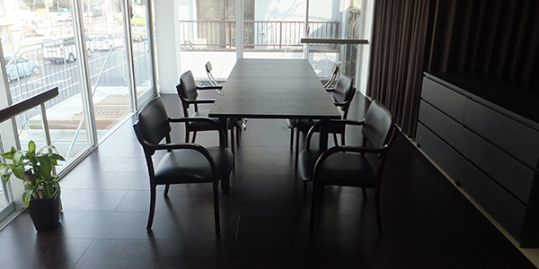

クローバー（ホーム）> 私たちについて> CLOVERとは
私たちについて
About us
社名に込めた想い
- 「Ｃ（カスタマー）とＲ（リレーションシップ）の間にＬＯＶＥ（愛）がある」
- ロゴの四つ葉についた水滴には、「小さなことにも気づく事ができる思いやりのある人になろう」という願いを込めています。目配り、気配りが出来て、お客様との間に愛があるサービスを目指します。
幸せの象徴である「クローバー」の名の下、関わるすべての人に幸せと愛を与えられる企業でありたいと思います。
会社概要
株式会社CLOVER（クローバーグループ）概要
| 社名 | 株式会社CLOVER（クローバーグループ） |
|---|---|
| 英文表記 | CLOVER inc. |
| 設立 | 2010年12月24日 |
| 本社 | 〒160-0004 東京都新宿区四谷４丁目１２番 03-6457-4343 |
| 代表者 | 代表取締役 香丸 俊幸 |
| 資本金 | 15,000,000円（グループ合計） |
| 従業員数 | ７０名（グループ合計 ２０１７年５月現在） |
| 事業内容 | 通所介護事業 介護事業に関するコンサルティング 経営コンサルティング |
株式会社CLOVER 会社概要
| 社名 | 株式会社CLOVER(英文名CLOVER inc.) |
|---|---|
| 本社 | 〒160-0004東京都新宿区四谷４−１２ |
| 連絡先 | 03－6457－4343 |
| 設立 | 2010年12月24日 |
| 資本金 | 5,000,000円 |
| 事業内容 | 通所介護事業 介護事業に関するコンサルティング 経営コンサルティング |
| 事業所 | デイサービスクローバー千駄ヶ谷 デイサービスクローバー神楽坂 デイサービスクローバー参宮橋 クローバーキッズ麻布十番 |
| 取引銀行 | 三菱東京UFJ銀行 みずほ銀行 横浜銀行 城南信用金庫 |
株式会社ケアフィット 会社概要
| 社名 | 株式会社ケアフィット(英文名CAREFIT inc.) |
|---|---|
| 本社 | 〒155-0031 東京都世田谷区北沢５－２－１ |
| 連絡先 | 03－3469－3630 |
| 設立 | 2012年5月9日 |
| 資本金 | 5,000,000円 |
| 事業内容 | 通所介護事業 |
| 事業所 | デイサービスクローバー代々木上原 デイサービスクローバー本八幡 |
| 取引銀行 | 三菱東京UFJ銀行 東日本銀行 |
合同会社 Care One 会社概要
| 社名 | 合同会社CareOne(英文名CareOne inc.) |
|---|---|
| 本社 | 〒150-0013 東京都渋谷区広尾３－１２－３０ |
| 連絡先 | 03－3409－8484 |
| 設立 | 2013年3月19日 |
| 資本金 | 5,000,000円 |
| 事業内容 | 通所介護事業 |
| 事業所 | デイサービスクローバー広尾 デイサービスクローバー四谷 |
| 取引銀行 | 三菱東京UFJ銀行 横浜銀行 りそな銀行 |
沿革
| 2010年12月 | ㈱CLOVER設立 |
|---|---|
| 2011年4月 | デイサービスクローバー千駄ヶ谷開設 |
| 2011年10月 | デイサービスクローバー神楽坂開設 |
| 2012年5月 | ㈱ケアフィット設立 |
| 2012年8月 | デイサービスクローバー代々木上原開設
 |
| 2013年3月 | 合同会社ケアワン設立 |
| 2013年6月 | デイサービスクローバー広尾開設
|
| 2013年10月 | デイサービスクローバー四谷開設 |
| 2015年7月 | デイサービスクローバー参宮橋開設 |
| 2016年3月 | デイサービスクローバー本八幡開設 |
| 2016年4月 | アフタースクールクローバーキッズ麻布十番開設 |
| 2018年3月 | デイサービスクローバー四谷を「デイサービスクローバー新宿」として移転 |
| 2018年4月 | 新卒１期生が入社 |
| 今後 | 新しく保育サービスを展開予定 |